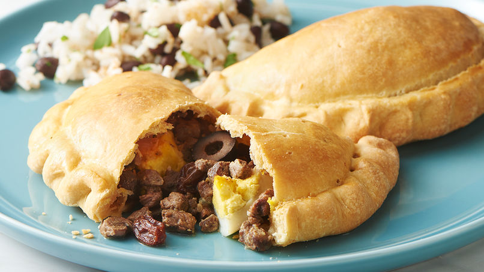

Empanada a la chilena
 Deliciosa comida tradicional de la cultura chilena.
harina
huevos
sal
carne
cebollas
pasas
crear pino, reposar por 16 horas
hacer masa
combinar ambos, como la foto, duh
poner al horno